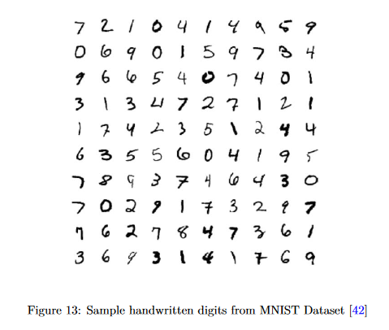
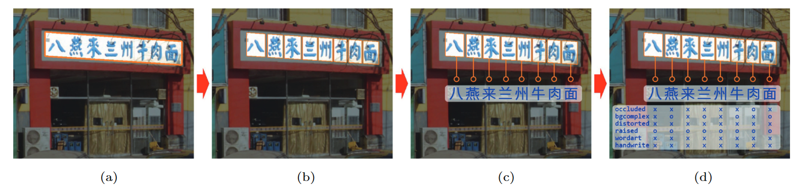
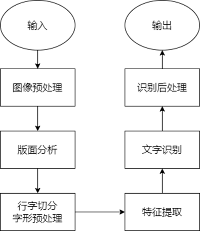

Homework-快冀了该写寒假作业了不然就寄了
以上都收到。同学们做的都挺好，希望在家能坚持学习不松懈。
三年级同学目前以大论文为主，到放假争取写完大论文初稿，开学前出成品。再开学就是答辩资格审核，预答辩，外审，答辩流程了，还要抓紧时间。
二年级同学尽快完成初步实验，寒假期间写小论文。
一年级同学还是要多看论文，从两个方面：
1.了解问题背景与意义，切实理清目前存在的问题，确定其研究价值。
2.看技术方法，结合网络资源弄清楚原理，了解其不足，为自己创新打基础。
@全体成员
寒假安排：
1.寒假时间：1月7日正式放假，2月18报到，20日正式上课
2.三年级任务：完成大论文。初稿随时可以提交给我，最晚不超过2月5日。
3.二年级任务：抓紧时间做实验，完成小论文初稿。随时可以提交给我看。
4.一年级任务：完成一篇文献综述，重点论述研究背景与意义、研究内容与方法。要求：文中加引用标志，有参考文献列表，参考文献（包括英文文献）不少于15篇。开学前发给我。
目录
摘要
文字在人们生活场景中无处不在。OCR 技术可以将图像中的文字转换成便于计算机所理解的机器编码的形式，以提高计算机在图文处理中的效率。OCR 有着悠久的历史，随着时间的推移和技术的进步，现在已经有多种方法来实现 OCR 技术。本论文综述中收集了各种与 OCR 领域有关的文献。介绍了 OCR 领域中的具有代表性的数据库、流行的研究方法以及研究趋势等。
关键词：OCR、分类、人工智能、机器学习、深度学习
1 简介
计算机有着高速的检索速度，使用计算机对文章进行检索与人工查看各种图像文本相比，不仅效率更高，而且成本更低。然而，人们在生活中常见的容易理解的图像文本形式却不容易被计算机所理解。
光学字符识别（Optical Character Recognition, OCR）是一种将输入的图像文本转换成计算机容易理解的机器编码的系统OCR。OCR 能够处理不同的场景的图像，如打印的纸质材料，手写的纸质材料，视频中显示的字幕，道路上的广告标语等等。
OCR 历史悠久，早在 1965 年，就有在纽约世博会展示的机器“IBM 1287”，这是有史以来第一个光学阅读器，能够读取手写数字，这被视作 OCR 领域的先驱。20 世纪 70 年代，人们主要专注于提高 OCR 的响应时间和性能History。21 世纪后，引入了二值化技术，人们主要使用传统的机器学习方法设计 OCR ，如支持向量机（SVM）、随机森林（RF）、K 近邻算法（kNN）、决策树（DT）西瓜书等。近年来，随着深度学习技术的不断成熟和计算机硬件能力的不断提升，对 OCR 的研究逐渐转向深度学习方法，人们不再强调手工的特征提取技术，使用的深度学习方法包括卷积神经网络（CNN）、循环神经网络（RNN）、长短期记忆神经网络（LSTM）、自注意力机制（Self-Attention）花书等等。NLP 也开始与 OCR 相结合，赋予 OCR “理解”文字内容的能力，进一步提高了文字的识别率NLP。到目前为止，虽然机器识别文字的性能得到了显著的提升，但是与人理解图像文字的能力仍存在一定的差距，提升 OCR 的鲁棒性、效率和智能性仍是 OCR 发展的主要趋势。
在 OCR 中，根据输入数据的形式可进一步分为脱机识别和联机识别。脱机识别的输入数据是以扫描图像的形式出现的，图像中的文字形式又可以进一步分为印刷体文字和手写体文字。而联机识别的输入数据性质是动态的，输入的数据具有一定的速度，位置和定位点的笔尖运动，联机识别往往比脱机识别更加复杂On-line。
本系统文献综述（SLR）的组织结构如下：第 2 章介绍 OCR 领域常用到的各种数据集（中文、英文、数字）。第 3 章介绍 OCR 领域使用的方法（传统机器学习方法、深度学习方法及性能指标）。第 4 章介绍 OCR 领域的研究趋势。第 5 章对本次系统文献综述做出总结。
2 数据集
衡量不同的 OCR 算法的好坏，需要使用标准化的数据集来进行比较。在机器学习领域，往往也需要包含足够数量的数据的数据集。在文字领域，也分为印刷体文字和手写体文字。以下各小节介绍了中文、英文、数字中公开可用的数据集。
汉字文本平面ocr数据集有哪些? - 知乎 (zhihu.com)
2.1 MNIST

MNISTMNIST（Mixed National Institute of Standards and Technology database）被认为是机器学习领域最常用的数据集之一。它是 NIST 数据集的一个子集。该数据集包含 60000 张图像的训练集和 10000 张图像的测试集。训练集由来自 250 个不同人手写的数字构成，其中 50% 是高中学生，50% 来自人口普查局的工作人员，测试集也是同样比例的手写数字数据。图像均经过大小归一化处理成 28 x 28 像素的灰度图像。
2.2 HCL 2000

HCL 2000 是一个脱机手写汉字数据集。该数据库中共有 3755 个常用的汉字，并由 1000 个不同的笔者书写。笔者的背景（如年龄、职业、性别和受教育程度等）亦被纳入数据集。HCL 2000
2.3 Chinese Text in the Wild

Chinese Text in the Wild 数据集包含了来自腾讯街景从中国几十个不同城市拍摄的 32285 幅图像，共有 1018402 个汉字，3850 种汉字，每个图像中，所有中文文本都有注释其字符、边界框、是否被遮挡、背景复杂、失真、3D 突起、是否为艺术字体、是否为手写体等。Chinese Text in the wild
2.4 IAM
IAM 是基于的 Lancaster-Oslo/Bergen (LOB) 语料库的英文手写数据库。由 400 位笔者，共有 10055 种英文文本，其中包含 82227 个单词。IAM
2.5 ICDAR 2013
ICDAR 是国际文档分析与识别领域的顶级会议。ICDAR 2013 是一个英文标注的自然场景图片的数据集。训练集包含 229 张图像，测试集包含 233 张图像。ICDAR 2013
2.6 Total-Text
Total-Text 是一个英文标注的弯曲文本的自然场景图片的数据集。训练集包含 1255 张图像，测试集包含 300 张图像。该数据集可以评估 OCR 对弯曲文本的鲁棒性。Total-Text
3 研究方法
21 世纪后，人们主要使用机器学习方法来设计 OCR。OCR 在机器学习领域中一般被视为是一个分类问题。分类是一个在给定的输入数据上学习模型的过程，并将其映射或标记为预定义的类别或类西瓜书。本章主要从传统机器学习方法和深度学习方法两个方面介绍 OCR 的研究方法。
3.1 传统机器学习方法
一般来说，使用传统机器学习方法的 OCR 需要输入的图像进行图像预处理、特征提取和文字识别等操作。

3.1.1 图像预处理
3.1.1.1 图像二值化
图像二值化是图像预处理的常用操作。它将整幅图像仅用两种颜色来表示，以丢弃大多数无用的信息，便于后续的处理。将灰度大于阈值 T 的像素点的灰度设为 1，将灰度小于阈值 T 的像素点的灰度设为 0。
阈值 T 既可人为设定，也可使用 OSTU 等方法由计算机通过计算得到。冈萨雷斯数字图像处理
3.1.1.2 图像规范化
图像的多样性是 OCR 的一个主要难题，使用图像规范化可以减少字符图像的形状变化。常见的规范化技术有尺寸归一化、矩归一化、剪切变化、透视变换、非线性规范化等。ARAN
3.1.1.3 图像降噪
图像降噪可以使得图像保留大部分的主要特征的同时，又能够去除图像中的无用信息。常用的传统图像算法有高斯滤波、均值滤波、中值滤波、NLM 算法NLM等。
3.1.2 链码直方图
在传统机器学习方法中，文字识别的关键就是区别不同特征。对于文字，最常用的特征提取技术之一是链码直方图（CCH）。链码直方图可以有效地描述图像/字符边界/曲线等特征，从而帮助对字符进行分类。还有其他类型的方向特征，如 NCFE 特征和梯度特征等。将这些特征结合成一个特征向量由于之后的文字识别操作。feature extraction
3.1.3 文字识别算法
3.1.3.1 k-近邻算法
k-近邻算法是一种用于分类的非参数机器学习算法，既简单又有效。给定一个数据集，对于每个输入，在训练数据集中找到与该实例中最邻近的 k 个实例，这 k 个实例的多数属于某个类，就把该输入实例分为这个类。 统计学习方法
3.1.3.2 支持向量机（SVM）
在深度学习方法普及之前，支持向量机是手写数字识别、图像分类、人脸检测、对象检测和文本分类最强大的技术之一SVM。支持向量机是一类按监督学习方式对数据进行二元分类的广义线性分类器（generalized linear classifier），其决策边界是对学习样本求解的最大边距超平面。 统计学习方法在数据集中数量较少的情况下，SVM 有时表现得比深度学习方法还要好。
3.2 深度学习方法
传统的机器学习方法受限于手工设计特征的表达能力和处理流程的复杂性，在复杂场景下很难达到理想的文字识别效果，深度学习技术的出现很好地弥补了这一不足白皮书。
3.2.1 人工神经网络（ANN）
人工神经网络，简称神经网络，由生物神经元的结构启发得来。通过数学可以证明，只要神经元的个数足够多，人工神经网络能拟合任意函数。人工神经网络对给定的输入数据进行建模，并将其映射到预定的类别中。最典型的神经网络结构是全连接层神经网络结构。随着深度神经网络结构的出现，仅使用全连接层神经网络结构处理计算机视觉类的问题容易导致过拟合的现象。因而出现简化参数量的循环神经网络（RNN）和卷积神经网络（CNN）等结构。目前，神经网络被视作 OCR 所使用的最佳分类技术之一。

3.2.2 卷积神经网络（CNN）
卷积神经网络在 OCR 领域中取得巨大成效CNN因而应用广泛。完整的卷积神经网络流程包括：读入输入图像、进行多次卷积、池化操作、Flatten 得到特征向量、全连接层、softmax 处理、得到分类结果。
Melnyk 等人提出了一种基于卷积神经网络的离线手写汉字识别的架构，并且可以解决神经网络中的可解释性问题CNN2。
卷积神经网络训练出的模型并不能识别图像的缩放和旋转，空间变换网络（STNs）是 Jaderberg 等人提出的一种卷积神经网络架构模型，通过变换输入的图片，降低受到数据在空间上多样性的影响，来提高卷积网络模型的分类准确率，而不是通过改变网络结构STNs。
3.2.3 循环神经网络（RNN）
循环神经网络是一类以序列数据为输入，在序列的演进方向进行递归且所有节点按链式连接的神经网络。如果将输入的图像视作一组序列，也可将循环神经网络应用于 OCR 领域，Farisa Benta Safir 等人就使用了两种不同的循环神经网络 LSTM 和 GRU 构建了一个用于孟加拉语的端到端的 OCR 系统RNN。
3.2.4 自注意力机制（Self-Attention）
2017 年，Google 提出了 Transformer 模型，取代了以往 NLP 任务中的 RNN 网络结构Attention Is All You Need。此后，在文本识别领域中，Transformer 模型被频繁采用，其结构的优势带来了显著的效率提升。TrOCR 利用了图像 Transformer 作文文本编码器，仅使用一个简单的编码器-解码器模型的情况下，TrOCR 在打印文本和手写文本识别中均取得了目前最先进的准确率。 Transformer
3.2.5 OCR 与 NLP 的结合
人们在识字的时候，有时会根据上下文更加确定文字的内容。近年来，OCR 中开始引入自然语言处理技术，增强了对内容的“理解”能力，通过语义信息的关联，复杂场景下的文字识别能力得到增强。Javier Ferrando 等人将 OCR 识别的结果与 BERT 模型产生的预测相结合，提高了准确性NLP。
3.3 评价指标
OCR 以字符为单位进行统计和分析，评价的指标有：
- 字段召回率，指被完全正确识别字段（测试输出结果与字段的所有字符完全匹配）数量与总字段数比值。
- 字段准确率，指被完全正确识别字段（测试输出结果与字段的所有字符完全匹配）数量与测试返回识别结果的字段数量比值。
- 字符召回率，指被完全正确识别字符数量与真实字符总数的比值，可以反应识别错和漏识别的情况。
- 字符准确率，指被完全正确识别字符数量与测试返回的字符数的比值，可以反应识别错和多识别的情况。
- $F_\beta-Score$，可以综合反映字符识别召回效果和字符识别准确效果，计算公式如下：白皮书
4 研究趋势
OCR 领域的技术迭代十分迅速。近年来，OCR 领域的研究已从传统机器学习方法逐渐转为深度学习方法，很少强调手工提取图像特征。卷积神经网络在 OCR 领域的研究中仍占据主导地位。在 Self-Attention 机制提出以后，又逐渐取代了卷积神经网络在计算机视觉中的地位。传统机器学习方法也在和深度学习方法混合使用。NLP 也开始和 OCR 混合使用，通过上下文的推断进一步提高了 OCR 识别的准确率。
”text in the wild” 的识别仍是 OCR 的一个难点。由于这类图像的场景复杂，OCR 需要考虑背景噪声、透视、光照、不同字体等影响。还需要一个足够全面的数据集以尽可能包含日常生活中出现的文字变化。SLR
5 结论
OCR 有着悠久的历史。人工智能技术的发展使着 OCR 的性能越来越好。本文献综述中主要介绍了 OCR 领域中一些具有代表性的数据集。传统机器学习方法往往需要对数据集进行图像预处理和手工提取特征。支持向量机是传统机器学习方法的代表性算法之一。而传统机器学习方法在复杂场景下很难达到理想的文字识别效果，本文献综述介绍了计算机视觉的一些深度学习架构（ANN、CNN、RNN、Transformer）在 OCR 领域中的应用。
参考文献
OCR:C. C. Tappert, C. Y. Suen, and T. Wakahara, “The state of the art in online handwriting recognition,” IEEE Transactions on Pattern Analysis and Machine Intelligence, vol. 12, no. 8, pp. 787–808, Aug. 1990. [Online]. Available: http://dx.doi.org/10.1109/34.57669
History:S. Mori, C. Suen, and K. Yamamoto, “Historical review of OCR research and development,” Proceedings
西瓜书. 西瓜书 ↩
花书. 花书 ↩
NLP. Ferrando, Javier, Juan Luis Dominguez, Jordi Torres, Raul Garcia, David Garcia, Daniel Garrido, Jordi Cortada和Mateo Valero. 《Improving accuracy and speeding up Document Image Classification through parallel systems》, 12138:387–400, 2020. https://doi.org/10.1007/978-3-030-50417-5_29. ↩
On-line:S. D. Connell and A. K. Jain, “Template-based online character recognition,” Pattern Recognition, vol. 34, no. 1, pp. 1–14, 2001.
MNIST: C.-L. Liu, K. Nakashima, H. Sako, and H. Fujisawa, “Handwritten digit recognition: benchmarking of state-of-art techniques,” Pattern recognition, vol. 36, no. 10, pp.2271-2285, 2003.
HCL 2000: Zhang, Honggang, Jun Guo, Guang Chen和Chunguang Li. 《HCL2000 - A Large-scale Handwritten Chinese Character Database for Handwritten Character Recognition》. 收入 2009 10th International Conference on Document Analysis and Recognition, 286–90. Barcelona, Spain: IEEE, 2009. https://doi.org/10.1109/ICDAR.2009.15.
Chinese Text in the wild: Yuan, Tai-Ling, Zhe Zhu, Kun Xu, Cheng-Jun Li, Tai-Jiang Mu和Shi-Min Hu. 《A Large Chinese Text Dataset in the Wild》. Journal of Computer Science and Technology 34, 期 3 (2019年5月): 509–21. https://doi.org/10.1007/s11390-019-1923-y.
IAM: U.-V. Marti and H. Bunke, “The iam-database: an english sentence database for offline handwriting recognition,” International Journal on Document Analysis and Recognition, vol. 5, no. 1, pp. 39–46, 2002.
ICDAR 2013: Yin, Fei, Qiu-Feng Wang, Xu-Yao Zhang和Cheng-Lin Liu. 《ICDAR 2013 Chinese Handwriting Recognition Competition》. 收入 2013 12th International Conference on Document Analysis and Recognition, 1464–70. Washington, DC, USA: IEEE, 2013. https://doi.org/10.1109/ICDAR.2013.218.
Total-Text: Chng, Chee Kheng, 和Chee Seng Chan. 《Total-Text: A Comprehensive Dataset for Scene Text Detection and Recognition》. arXiv, 2017年10月28日. http://arxiv.org/abs/1710.10400.
冈萨雷斯数字图像处理. DIP ↩
ARAN. 《Aspect Ratio Adaptive Normalization for Handwritten Character Recognition | SpringerLink》. 见于 2023年2月3日. https://link.springer.com/chapter/10.1007/3-540-40063-X_55. ↩
NLM. Buades, Antoni, Bartomeu Coll和Jean-Michel Morel. 《Non-Local Means Denoising》. Image Processing On Line 1 (2011年9月13日): 208–12. https://doi.org/10.5201/ipol.2011.bcm_nlm. ↩
feature extraction. Liu, Cheng-Lin, Kazuki Nakashima, Hiroshi Sako和Hiromichi Fujisawa. 《Handwritten Digit Recognition: Investigation of Normalization and Feature Extraction Techniques》. Pattern Recognition 37, 期 2 (2004年2月1日): 265–79. https://doi.org/10.1016/S0031-3203(03)00224-3. ↩
SVM. Boukharouba, Abdelhak, 和Abdelhak Bennia. 《Novel Feature Extraction Technique for the Recognition of Handwritten Digits》. Applied Computing and Informatics 13, 期 1 (2017年1月1日): 19–26. https://doi.org/10.1016/j.aci.2015.05.001. ↩
统计学习方法. 李航 ↩
白皮书. OCR 白皮书 ↩
CNN. Liu, Cheng-Lin, 和Hiromichi Fujisawa. 《Classification and Learning Methods for Character Recognition: Advances and Remaining Problems》. 收入 Machine Learning in Document Analysis and Recognition, 编辑 Simone Marinai和Hiromichi Fujisawa, 90:139–61. Studies in Computational Intelligence. Berlin, Heidelberg: Springer Berlin Heidelberg, 2008. https://doi.org/10.1007/978-3-540-76280-5_6. ↩
CNN2. Melnyk, Pavlo, Zhiqiang You和Keqin Li. 《A High-Performance CNN Method for Offline Handwritten Chinese Character Recognition and Visualization》. Soft Computing 24, 期 11 (2020年6月): 7977–87. https://doi.org/10.1007/s00500-019-04083-3. ↩
STNs. Jaderberg, Max, Karen Simonyan, Andrew Zisserman和Koray Kavukcuoglu. 《Spatial Transformer Networks》. arXiv, 2016年2月4日. http://arxiv.org/abs/1506.02025. ↩
RNN. Safir, Farisa Benta, Abu Quwsar Ohi, M. F. Mridha, Muhammad Mostafa Monowar和Md Abdul Hamid. 《End-to-End Optical Character Recognition for Bengali Handwritten Words》. arXiv, 2021年5月9日. http://arxiv.org/abs/2105.04020. ↩
Attention Is All You Need. Vaswani, Ashish, Noam Shazeer, Niki Parmar, Jakob Uszkoreit, Llion Jones, Aidan N. Gomez, Lukasz Kaiser和Illia Polosukhin. 《Attention Is All You Need》, 2017年6月12日. https://doi.org/10.48550/arXiv.1706.03762. ↩
Transformer. Li, Minghao, Tengchao Lv, Jingye Chen, Lei Cui, Yijuan Lu, Dinei Florencio, Cha Zhang, Zhoujun Li和Furu Wei. 《TrOCR: Transformer-based Optical Character Recognition with Pre-trained Models》. arXiv, 2022年9月6日. http://arxiv.org/abs/2109.10282. ↩
SLR. Memon, Jamshed, Maira Sami和Rizwan Ahmed Khan. 《Handwritten Optical Character Recognition (OCR): A Comprehensive Systematic Literature Review (SLR)》. arXiv, 2019年12月31日. http://arxiv.org/abs/2001.00139. ↩